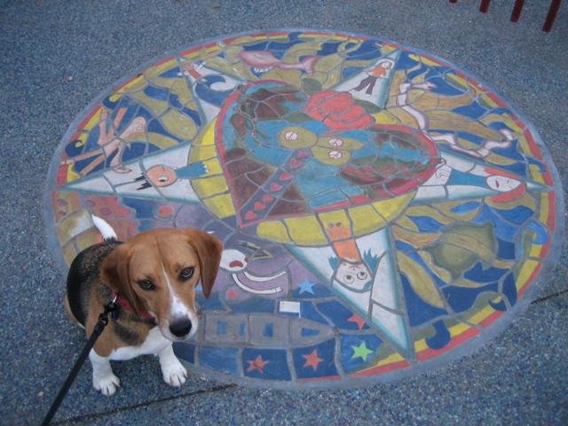

<--Previous Up Next-->

Quetzalcoatl gateway
This sidewalk tile art is in front of the gateway to the mini-park on 24th Street near York Street. The park was renovated in 2006. It is almost filled by a colossal scuplture of Quetzalcoatl, the Central American feathered serpent god, who curves in and out of the pavement.